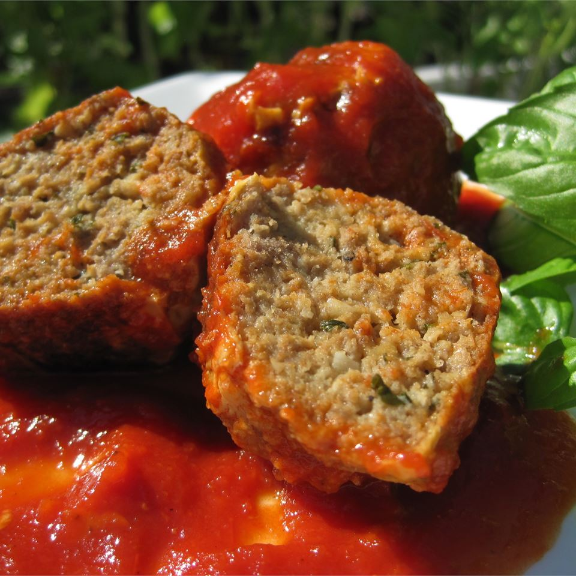

Meatballs

Description
I never knew how to make good meatballs until I found this recipe. I normally make mine with just ground beef and they still taste great. I've used the combination of pork, beef and veal and they are equally good. Definitely use fresh bread crumbs and freshly grate your cheese instead of using the canned variety...it really does make a difference.
Ingredients
1 cup grated Romano cheese
1 1/2 tablespoons chopped parsley
2 cups stale Italian bread, crumbled
Directions
Combine beef,veal, and pork in a large bowl
Add garlic, eggs, cheese, parsley, salt, and pepper
Blend bread crumbs into meat mixture. Slowly add water 1/2 cup at a time. Mixture should be very moist but hold its shape if rolled into balls
Shape into meatballs
Heat olive oil in large skillet and fry meatballs in batches
When meatballs are brown and slightly crisp, remove from oil and drain on paper towel